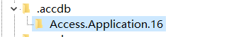

本文最后更新于：2020年4月16日 晚上
简单总结，改注册表。
前言
为什么突然想到要搞这个呢？因为我突然发现我卸载了 Access 和 Publisher 之后，右键还是有这两位的新建方式。这明显就是没有卸载干净嘛！
正文
- 按下
Win+R，输入regedit进入注册表编辑器。 - 在上面的目录，输入
计算机 \HKEY_CLASSES_ROOT\.mdb进入相关项。
这里我是用 Access 的.mbd格式举例。因为 Access 还有一个格式.accdb。所以还要做同样的操作来删除新建.accdb。而 Publisher 相关的格式是.pub，重复这个步骤也可以搞定。 - 这个时候你应该能看到和我这个相似的界面。

因为我现在已经删除了，所以没有ShellNew这一项。而你应该做的，就是删除这一项。删除之后你可以在桌面右键点击看看，是不是那一项没有了？😀
参考
本博客所有文章除特别声明外，均采用 CC BY-SA 3.0协议 。转载请注明出处！